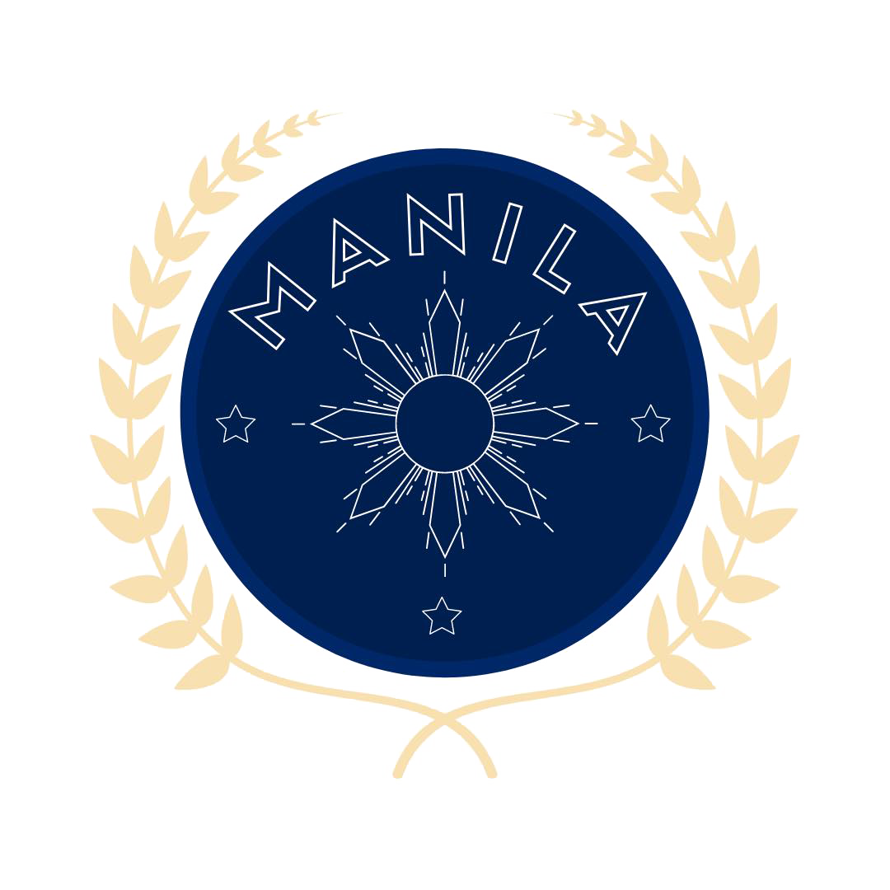

HOME
REGISTRATION
ABOUT
CONTACT US
United Nations Human Settlement Program
About the Council
Modality: Online
Difficulty: Beginner-Intermediate
Size: 30-40
Topic: Adapting to rapid
urbanization and its environmental effects
Chairpersons
Prominent individuals with outstanding achievements in Model UN.
Nazli Turan
Esther David
Karl Matthew Chua
Contact Us
About
A Model UN created by Venture MUN Club (VMUNC) based in the Philippines.
@Manilamun 2022